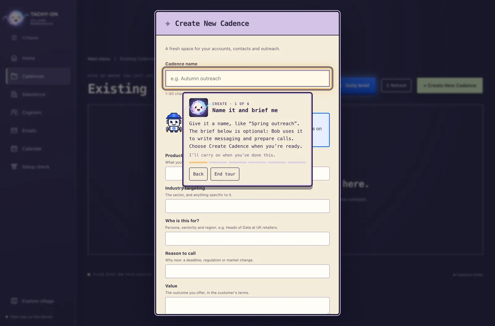
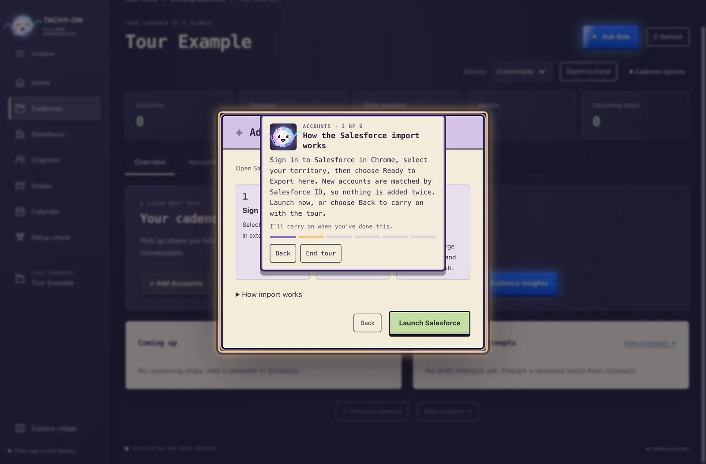
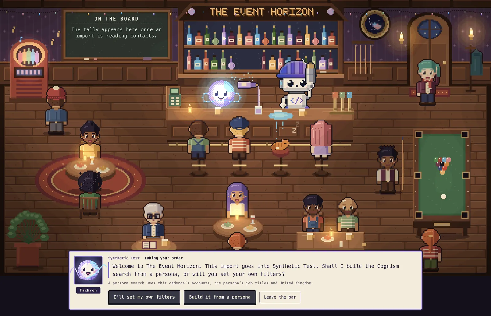
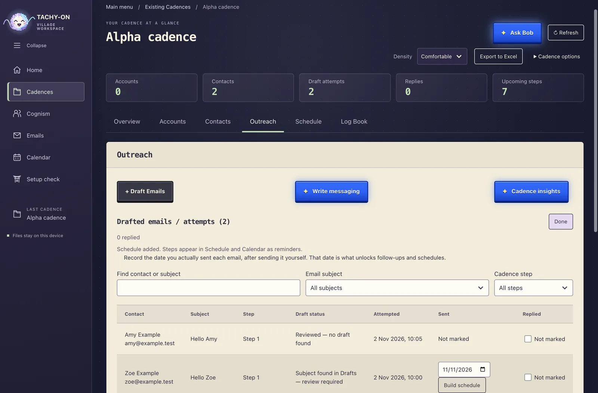
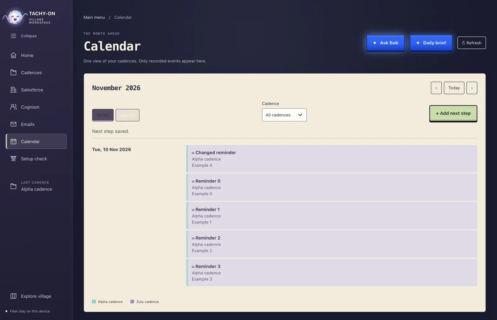
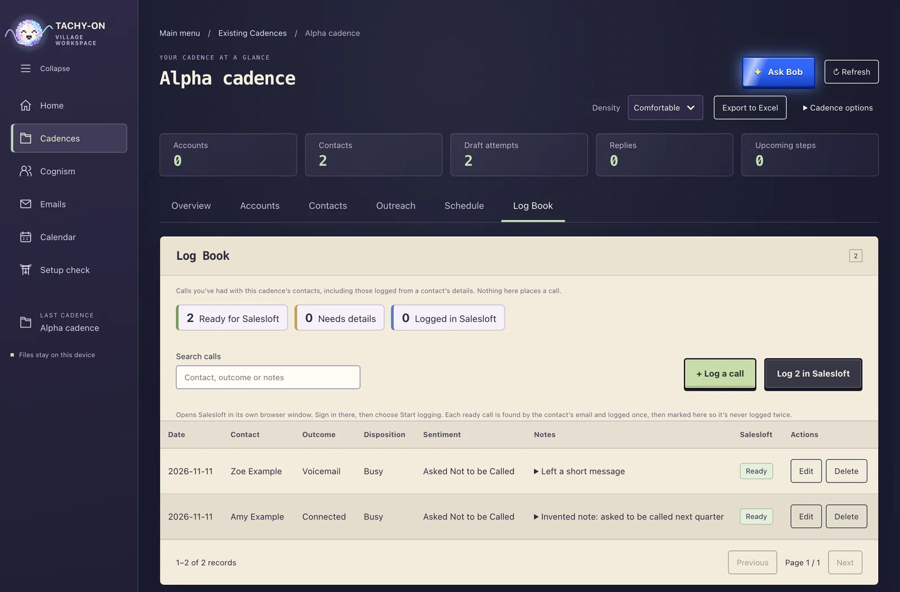

A cadence, start to finish
A cadence is one campaign: the companies you’re going after, the people in them, and everything you do to reach them. Here is one being built in the app.
-
Create the cadence
Give it a name. Add a short brief about the product, the industry and who it’s for, and Bob uses it to write your messaging and prepare your calls.

-
Add your accounts
Sign in to Salesforce in Chrome, pick your territory, and the accounts come across. Each one is matched by its Salesforce ID, so nothing is added twice.

-
Import the people
The workspace turns into The Event Horizon. Tachyon asks how to search Cognism, how many pages to save and whether to send the list to Salesloft, then reports every contact as it’s read.

-
Draft your emails
Choose the recipients, write the message or ask Bob for one, and approve the preview. Outlook saves them as drafts for you to check and send yourself.

-
Plan what comes next
Add follow-up calls and emails as next steps. Every cadence’s plan meets in one calendar, so you can see the whole week at once.

-
Log your calls
After each call, note who, when, the outcome and what was said. One button logs them all in Salesloft, and each call is logged once, even if something goes wrong halfway.

What it never does on its own
- It never sends an email. Outlook only ever saves drafts. Sending is always you.
- It never signs in for you. Salesforce, Cognism, Outlook and Salesloft open in Chrome, and you sign in there.
- It never makes up progress. Every count you see is one the import actually reported.
- It never sends your data anywhere new. Your cadences are files on your own computer.
Get Tachyon Village
For Macs with Apple silicon or Intel, and for Windows. Tachyon brings everything it needs with it. The only thing to have installed is Google Chrome, which the Cognism, Salesforce, Outlook and Salesloft tasks open.
One line in Terminal (or PowerShell on Windows) installs it. Running the same line again updates it, and your cadences are never touched.
Version 0.1.0 · November 2026
Install on a Mac
- Open Terminal. Press ⌘ Space, type Terminal and press Return.
- Paste this line and press Return.
curl -fsSL https://github.com/OriolNuez/tachyon-website/releases/latest/download/install.sh | bash - That’s it. Tachyon Village opens from your Applications folder when it’s done, usually within a minute. It needs macOS 12 or newer.
Or download it yourself
- Mac with Apple silicon (M1 and newer) ZIP · 188 MB
- Mac with Intel ZIP · 197 MB
Not sure which Mac you have? Apple menu → About This Mac: “Chip: Apple M…” means Apple silicon.
The app isn’t signed with a paid Apple developer account, so if you open the download directly, macOS says it “could not verify” Tachy-on Village. Instead, leave the zip in your Downloads folder and paste this line into Terminal. It installs the app into Applications and opens it.
(A=$([ "$(sysctl -n hw.optional.arm64 2>/dev/null)" = 1 ] && echo arm64 || echo x64); Z=$(ls -t ~/Downloads | grep -m1 -E "^(Tachy-on-Village|Tachyon)-mac-$A.*\.zip$"); if [ -z "$Z" ]; then echo "Tachy-on Village for this Mac ($([ $A = x64 ] && echo Intel || echo Apple silicon)) is not in your Downloads folder yet. Download it from the Tachyon Village page first."; else D=/Applications; [ -w "$D" ] || { D=~/Applications; mkdir -p "$D"; }; T=$(mktemp -d); ditto -x -k ~/Downloads/"$Z" "$T" && P=$(ls -d "$T"/*.app | head -1) && N=$(basename "$P") && rm -rf "${D:?}/${N:?}" && ditto "$P" "$D/$N" && xattr -dr com.apple.quarantine "$D/$N" && open "$D/$N"; rm -rf "${T:?}"; fi)Quit Tachy-on Village first if it’s already open.
Install on Windows
- Open PowerShell. Click Start, type PowerShell and press Enter.
- Paste this line and press Enter.
irm https://github.com/OriolNuez/tachyon-website/releases/latest/download/install.ps1 | iex - That’s it. Open Tachyon Village from the Start menu or your desktop. It installs for your user only, so no administrator rights are needed. Windows 10 or 11, 64-bit.
Or download it yourself
- Windows installer (64-bit) EXE · 168 MB
Run the installer. It isn’t signed with a paid Microsoft certificate, so if SmartScreen appears, choose More info → Run anyway. The Windows version is new and has been tested on fewer computers than the Mac one.
Questions
Is this a website or an app?
An app you install on your computer, for macOS and Windows. Your cadences stay on your computer; nothing is uploaded to this website.
Why install with a command?
Tachyon isn’t signed with a paid Apple or Microsoft developer account. A file downloaded in a browser gets flagged, so macOS refuses to open it and Windows shows a warning. The install line downloads the app directly instead. It also checks the download against its published checksum, and installs nothing if they don’t match.
How do I update or uninstall it?
To update, run the same install line again. To uninstall on a Mac, drag Tachy-on Village from Applications to the Bin. On Windows, use Settings → Apps → Installed apps. Neither removes your cadences, which stay in the Tachyon folder in your Documents.
Where is my data kept?
In a Tachyon folder in your Documents: one folder per cadence, with your accounts and contacts as spreadsheet files you can open yourself.
Which tools does it work with?
Salesforce for accounts, Cognism for contacts, Outlook for email drafts and Salesloft for calls and contact lists. You use your own accounts for each.
Who are Tachyon and Bob?
Tachyon is the glowing orb who runs the bar and talks you through imports. Bob is the robot assistant who writes messaging, prepares your calls and gives you a daily brief.